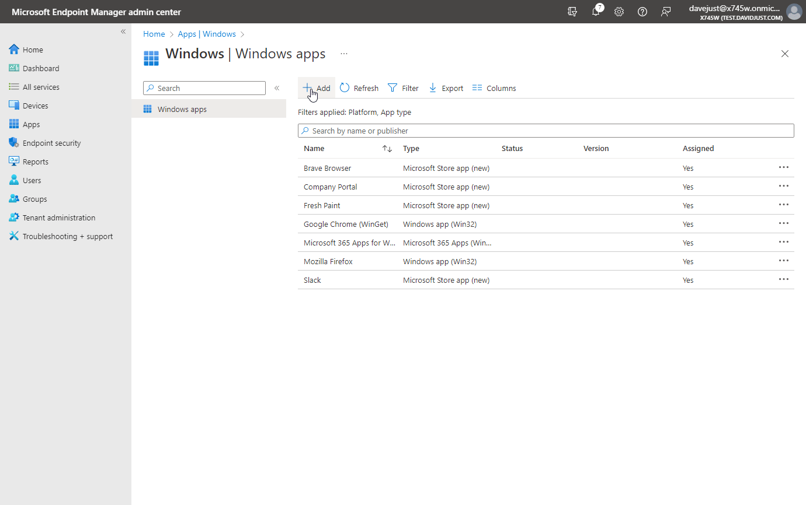

The New Microsoft Store Experience in Intune

Microsoft relecently released the new Microsoft Store integration for Intune . The new integration allows admins to easily search the store and deploy traditional APPX/UWP packages as well as a limited number of new Win32 app packages. WinGet (the Windows package manager) is the technology behind this new experience.
This new experience greatly simplifies application deployment through Intune and is intended to replace the Microsoft Store for Business which will be retired in the first half of next year. You can easily search for applications to deploy using the WinGet command line tool.
Note: The only applications which are avaiable to deploy are ones which come from the ‘MSSTORE’ source. Apps which use the WinGet public repository are not available to deploy using the new experience. If you wish to deploy an app from the WinGet repository, you can use the method I deveolped using PowerShell.
Lets take a look at some searching the store for Packages. Open CMD or PowerShell and use the following syntax to search for apps in the MS Store
WinGet search "Acrobat DC" --source MSSTORE
Acrobat DC is an example of a “Win32” app which is available in the Microsoft store. Win32 apps are designated with an ID which starts with “XP”. UWP apps will always start with 9 in the ID.
Moving over to Intune, we can easily deploy acrobat using the new option in Intune.
The experience to the end user is the same as any Win32 or LOB app assigned to them. If the app is set to required, the app will install automatically, and the user will see a toast notification to let them know of the install (if enabled). If the app is set to available, the user will be able to self service install through the company portal.
I am happy to see Microsoft continually improve Intune and add new features to make administration easier. If you have any questions or comments, please feel free to leave a comment or send me an email. As always, thanks for reading.